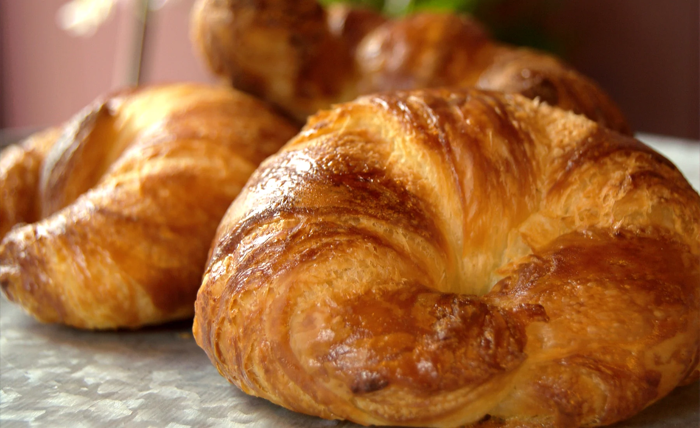
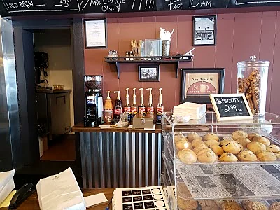
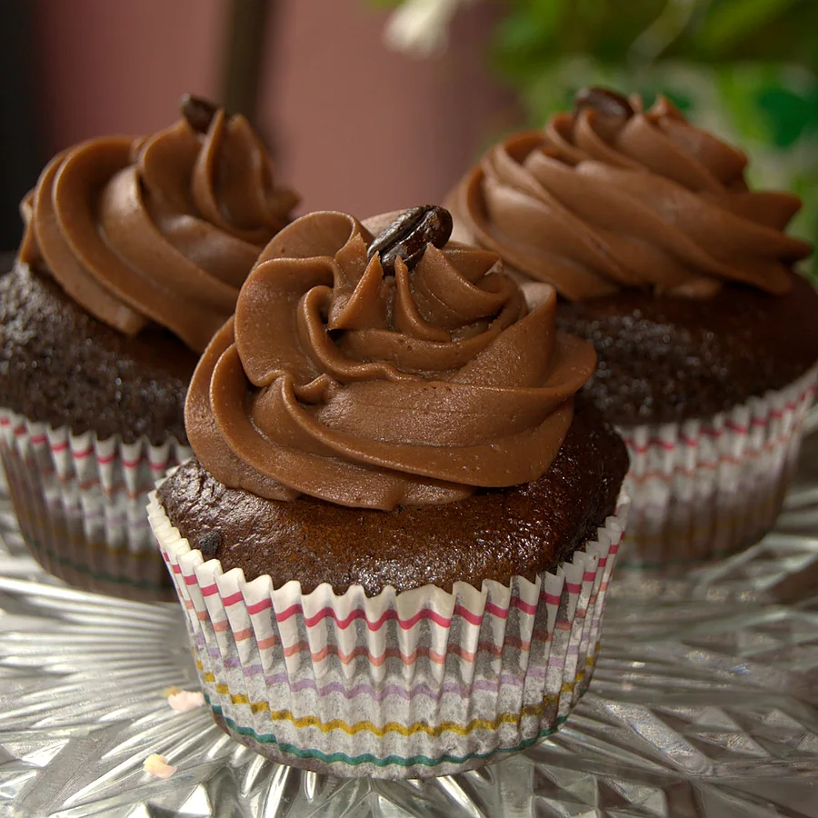
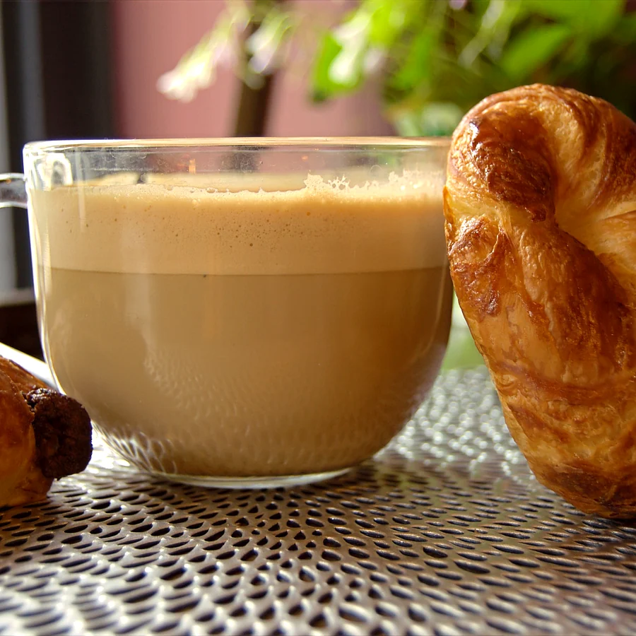
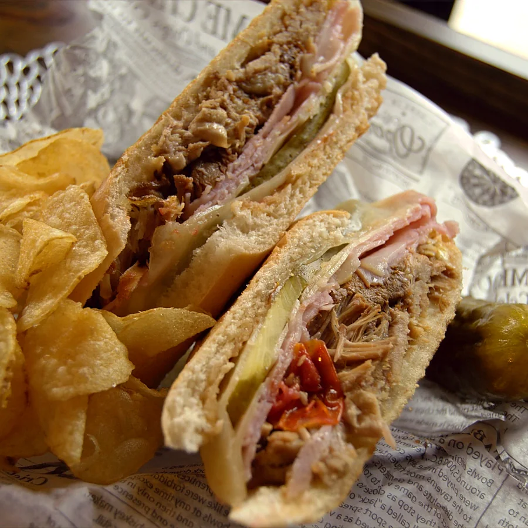

Coffee
- CoffeeHot, simple and ready for the morning.$2
- CappuccinoFrothed milk and espresso.$3.75
- Mocha Latte$4

Warrensburg, New York · Established 2020
Coffee · Breakfast · Lunch · Bakery
A neighborhood bistro for warm coffee, breakfast favorites, made-to-order lunch and something sweet to take home.
View the Menu
dine in · dine out
A local table since 2020
Breakfast, lunch, coffee and handcrafted sweets all meet under one roof. Sulla Terra keeps the choice broad enough for the whole family and the welcome easy enough for an everyday stop.
See today’s favoritesFrom the Sulla Terra kitchen



Plan your visit
Catering & special events
Planning a gathering or looking for menu details? Send a note directly to the bistro and tell them what you have in mind.
Email an Enquiry 3749 Main Street Warrensburg, NY 12885